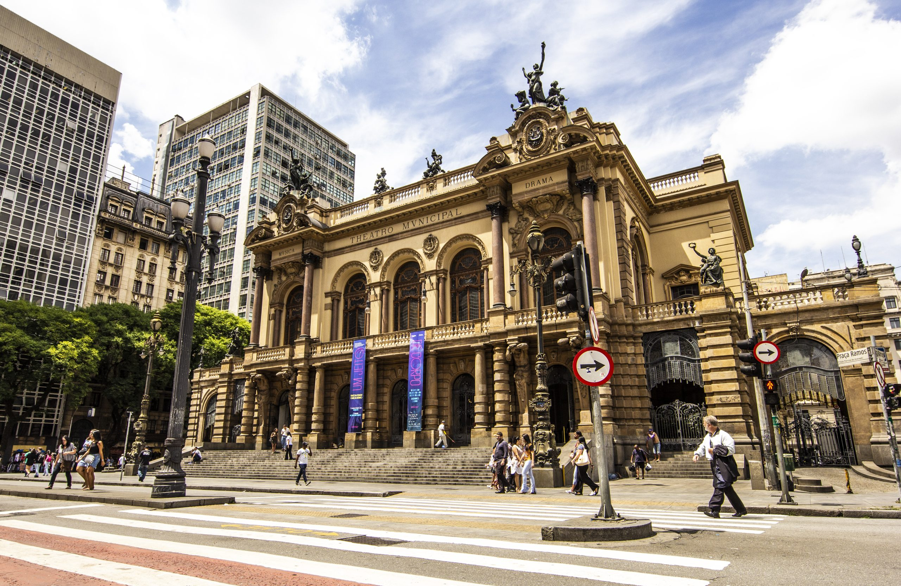
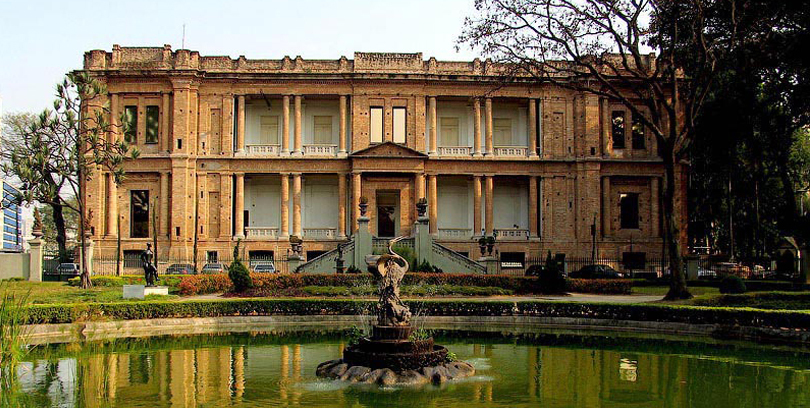
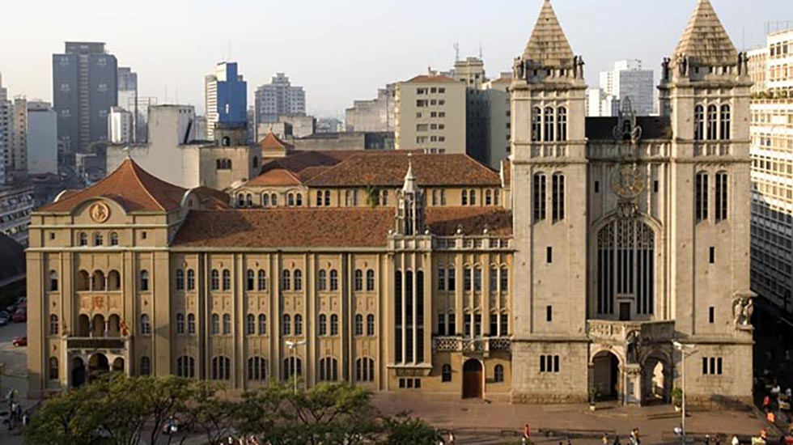
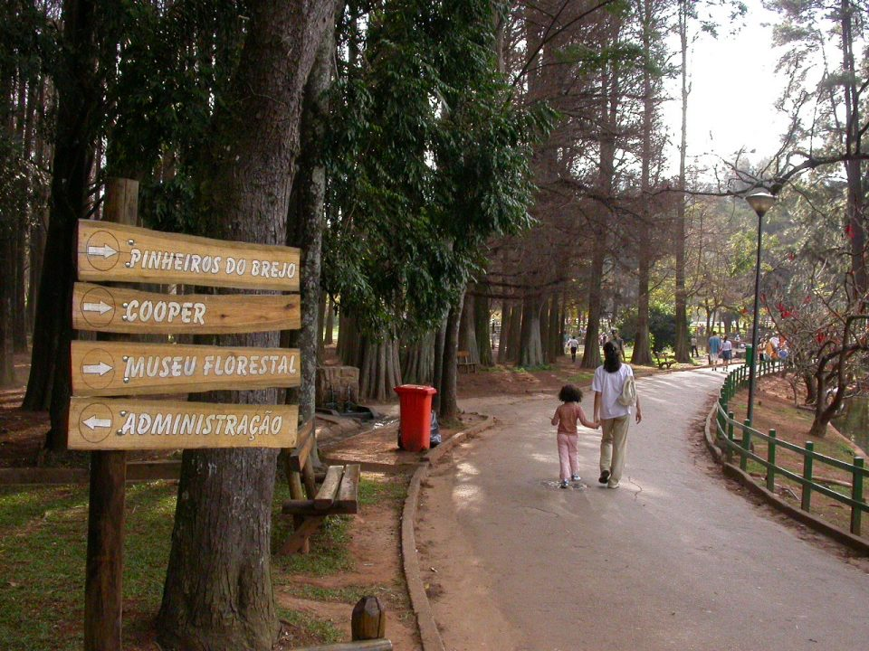
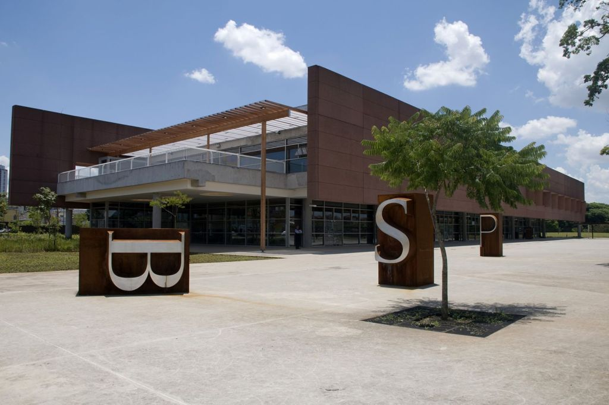
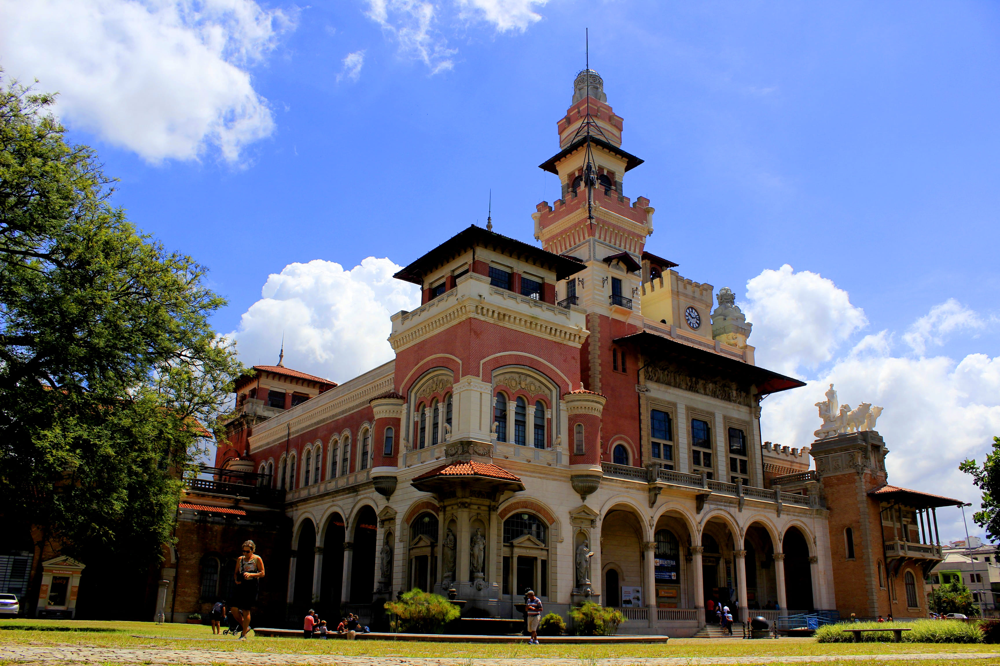
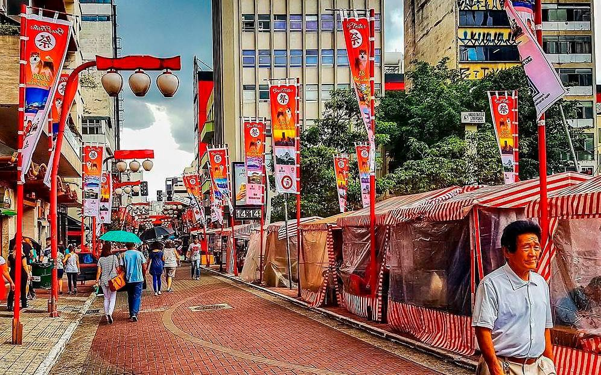

O Museu de Arte de São Paulo foi fundado em 1947 e fica no coração da Avenida Paulista. É o mais importante acervo de arte europeia do Hemisfério Sul, além de referência arquitetônica, sua coleção reúne mais de 10 mil obras envolvendo pinturas, esculturas, fotografias e muito mais!
Para quem não conhece muito de arte, como eu, é uma ótima forma de entender mais sobre cada arte exposta lá, já que a maioria tem uma breve explicação da origem e como foi criada.
Se você procura atrações gratuitas na cidade de São Paulo, fica esperto, pois o acesso é gratuito nas terças-feiras e toda primeira quarta-feira do mês!
Theatro Municipal

Com mais de um século de história, o Theatro Municipal foi inspirado na arquitetura da Ópera de Paris e foi sede de movimentos importantes na história do Brasil, como a Semana de Arte Moderna, que marcou o início do modernismo.
Nos tempos atuais, o Theatro abriga diversas atividades como a Orquesta Sinfônica Municipal, o Balé da cidade de São Paulo e o Coral Paulistano.
Não esqueça de conferir os espetáculos em vigor nas datas em que você for à cidade: é uma experiência completa poder estar em um local com tanta história.
Os valores variam de um espetáculo para outro.
Pinacoteca

Primeiro museu de artes de São Paulo, inaugurado em 1905 próximo à emblemática Estação da Luz, a Pinacoteca é um museu de artes visuais com ênfase na produção brasileira e em diálogo com as culturas do mundo.
Ele é um dos pontos turísticos de São Paulo mais conhecidos, tanto pela sua arquitetura externa quanto pelo seu vasto acervo de mais de cem mil obras.
Por ser um lugar que visa muito ser um espaço democrático e com foco na diversidade da sociedade brasileira, mesmo quem não entende muito de movimentos artísticos tem tudo para se encantar.
Aos sábados o acesso é gratuito.
Mosteiro de São Bento

O Mosteiro de São Bento tem 423 anos de história e chama atenção pela construção inspirada na tradição germânica e pelas relíquias conservadas no seu interior, como o relógio, sinos e os órgãos.
O local abriga a Basílica de Nossa Senhora de Assunção e o mosteiro com cerca de 40 monges enclausurados que seguem a tradição. Vale conferir os horários das missas realizadas no local, conhecidas pelos cantos gregorianos acompanhados de um grande órgão.
O acesso ao mosteiro é gratuito.
Lugares já visitados
Horto Florestal

Localizado em área urbana, na Zona Norte da cidade de São Paulo, o Horto Florestal foi criado em 1986 e possui 187 hectares de área, sendo 35 destinados ao público. O parque possui uma rica representatividade de Mata Atlântica, algo raro na capital paulista, e possui áreas de lazer, lagos e bicas. Espécies exóticas de eucalipto podem ser vistas no Horto, assim como o pau-brasil. Entre animais a serem observados no Horto destacam-se tucanos, maritacas, esquilos e capivaras.
Parque da Juventude

O Parque da Juventude mudou a paisagem da Zona Norte de São Paulo desde 2003, ao substituir o Complexo Penitenciário Carandiru por uma área de lazer e entretenimento ao ar livre. Possui ampla área verde, instalações para práticas de esporte, áreas de lazer e entretenimento para pessoas de todas as idades, espaço canino e espaço aberto para shows e eventos. O espaço abriga a Biblioteca de São Paulo, com mais de 35 mil títulos, e o Acessa São Paulo, programa de inclusão digital do Governo do Estado. No local, foram mantidos referenciais históricos da época do Carandiru.
Museu Catavento

O Catavento Espaço Cultural da Ciência apresenta à população infantil, juvenil e, também, aos adultos, um espaço lúdico, social e cultural, rico em objetos e ambientes de aprendizagem interativos e informais, que contribuem para o desenvolvimento da infância e da juventude, despertando a curiosidade e o interesse pela ciência. O espaço fica no Palácio das Indústrias, antiga sede da Prefeitura de São Paulo, o Espaço Cultural da Ciência.
Liberdade

Um alto arco torii vermelho marca a entrada da Liberdade, a região japonesa da cidade, onde as ruas são decoradas com lanternas. As opções gastronômicas incluem bares de sushi, lojas de ramen e barracas de macarrão yakisoba, bem como restaurantes chineses e coreanos. As lojas de presentes e os supermercados vendem quimonos, panelas e iguarias asiáticas importadas, enquanto a Feira da Liberdade, aos domingos, tem acessórios e artesanato.